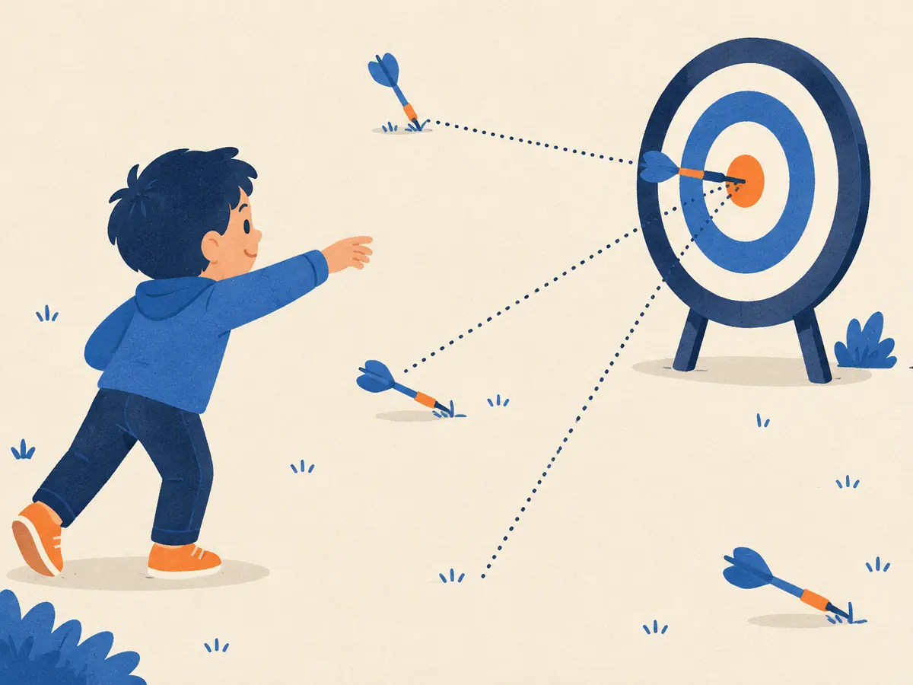

Loss functions
A model can't get better until it can measure how wrong it is. A loss function turns "how wrong" into a single number. Training is nothing more than pushing that number down.
By the end you can
- Explain what a loss function is and why training minimises its average over a dataset.
- Compute mean squared error and cross-entropy by hand.
- Pick the right loss for regression versus classification and next-token prediction.
Take your best guess. Being wrong now helps the right answer stick later.
A loss squares each error before adding them up. Which costs more?
- One prediction that is off by 2
- Two predictions that are each off by 1
- They cost exactly the same
- It depends on the learning rate
An LLM gives the correct next token a probability of only 0.01. Its loss on that token, $-\ln 0.01$, is about…
- 0.01
- 0.99
- 4.6
- 100
A loss is one number for "how wrong"
A model is a function $f_\theta$ with adjustable parameters $\theta$. Given an input $x$ it makes a prediction $\hat y = f_\theta(x)$. A loss function $\ell(\hat y, y)$ compares that prediction with the right answer $y$ and returns a number: 0 for perfect, bigger for worse.
One example tells us little, so we average over the whole training set of $N$ examples:
$$L(\theta) = \frac{1}{N}\sum_{i=1}^{N} \ell\big(f_\theta(x_i),\, y_i\big)$$$L(\theta)$ is the training loss: a single number for each setting of the parameters. The sum $\sum_{i=1}^{N}$ adds up the loss of every example $i$, and $\frac{1}{N}$ turns the total into an average. Training means finding the $\theta$ that makes $L$ small.
Two properties make a loss usable for training:
- It's a single number. "Downhill" only makes sense for one quantity. You can't minimise a list of ten scores at once.
- It's smooth. A small change in $\theta$ gives a small, measurable change in $L$, so the slope (the gradient) tells us which way to move. Accuracy fails this test: nudge a weight slightly and accuracy usually doesn't change at all, so its gradient is zero almost everywhere. That's why models train on a smooth loss but are often reported by accuracy.
Regression: mean squared error
When the target is a number (a price, a temperature, a score), the standard choice is the mean squared error:
$$\text{MSE} = \frac{1}{N}\sum_{i=1}^{N} \big(y_i - \hat y_i\big)^2$$$y_i - \hat y_i$ is the error (or residual) on example $i$: the target minus the prediction. Squaring it makes every error positive and makes big errors count much more than small ones. Watch it being built for a model that is just a straight line:
Why squares rather than plain distances? Squared error is smooth everywhere, and its slope is simple: $\frac{d}{d\hat y}(y - \hat y)^2 = -2(y - \hat y)$, which is proportional to the error itself. The alternative, mean absolute error (MAE, the average of $|y_i - \hat y_i|$), treats a miss of 4 as only twice as bad as a miss of 2, rather than four times. That makes MAE more robust to outliers, but its slope has the same size no matter how close you are, which makes it less pleasant to optimise.
There's a deeper reason too: if the noise in the targets is Gaussian, minimising MSE gives exactly the maximum-likelihood parameters. Cross-entropy, below, is maximum likelihood for categories.
Explain like I'm 5

You throw five darts. For each one, a dotted line measures how far it landed from the bullseye.
To get your score for the round, you square each distance (so a dart way off the board counts a lot) and take the average. A small score means good throwing. Practising means changing how you throw so that score goes down.
Where the analogy breaks: a real model gets a different "bullseye" for every example, and for word prediction the score is about how much it believed in the right answer, not a distance.
Worked example
Three examples with targets $y = [3,\ 5,\ 4]$. The model predicts $\hat y = [2.5,\ 5.5,\ 2]$.
- Errors $y - \hat y$: $[0.5,\ -0.5,\ 2]$
- Squares: $[0.25,\ 0.25,\ 4]$. The single big miss dominates.
- Average: $(0.25 + 0.25 + 4)/3 = 1.5$. So $\text{MSE} = 1.5$.
Targets $y = [2,\ 0,\ 4]$, predictions $\hat y = [3,\ 0,\ 1]$.
- Error on the third example, $y_3 - \hat y_3$:
- Sum of the three squared errors:
- MSE:
Playground: fit the line yourself
Move the line $\hat y = w\,x + b$ with the sliders. Each orange square has side equal to one error, so its area is that error squared. The MSE is their average area.
Classification and next tokens: cross-entropy
When the answer is one of several categories (cat or dog; which of 100,000 tokens comes next), the model outputs a probability for each category, usually via a softmax (P3.2). A good model puts a lot of probability on the right one. The cross-entropy loss measures exactly that:
$$\ell = -\ln p_\theta(y \mid x)$$$p_\theta(y \mid x)$ is the probability the model gave the correct category $y$ for input $x$, and $\ln$ is the natural log. That's the whole formula. In P1.6 you met the general cross-entropy $H(q, p) = -\sum_k q_k \ln p_k$; when the target $q$ puts all its weight on the correct class (a "one-hot" target), every term but one is zero and it collapses to $-\ln p_{\text{correct}}$.
Why a logarithm?
- Likelihood. The probability a model gives a whole training text is the product of its per-token probabilities. Logs turn that product into a sum, so minimising the average $-\ln p$ is the same as maximising the likelihood of the training data.
- Confident mistakes are expensive. $-\ln p$ heads to infinity as $p \to 0$, so the model is pushed hard never to rule out what actually happens.
- Clean gradients. Combined with softmax, the gradient with respect to the model's raw scores (logits) is just $p - q$: predicted probabilities minus the one-hot target.
A useful reference point: a model that spreads probability evenly over a vocabulary of $V$ tokens has loss $\ln V$. For GPT-2's 50,257-token vocabulary that's $\ln 50{,}257 \approx 10.8$, roughly where an untrained LLM's loss curve begins. Training drives it down to a few nats per token; Karpathy's nanoGPT reproduction of the 124M-parameter GPT-2, for example, reaches about 2.85 on its OpenWebText validation set. (Using $\ln$ means the loss is measured in nats; with $\log_2$ it would be bits.)
Worked example
A model reads "The cat sat on the" and gives the correct next token, mat, probability $0.25$.
- Loss on this token: $-\ln 0.25 = \ln 4 \approx 1.386$.
- If it had given mat probability $0.5$ instead: $-\ln 0.5 \approx 0.693$. Doubling the probability lowered the loss by exactly $\ln 2$.
Over a three-token sentence, a model gives the correct tokens probabilities $0.5$, $0.25$ and $0.8$.
- Loss on the third token, $-\ln 0.8$:
- Average loss over the three tokens:
Why minimise the average over a dataset?
We don't care about one example; we want the model to do well on all the data it might see. The training average is our best estimate of the expected loss over that whole distribution, $\mathbb{E}_{(x,y)}\left[\ell(f_\theta(x), y)\right]$ (P1.5). Fitting a model by minimising it is called empirical risk minimisation.
We use the mean rather than the sum so the loss doesn't grow with the size of the dataset or batch. A loss of 2.1 means the same thing on 32 examples or on a million tokens, which keeps the learning rate meaningful when you change the batch size. And because the loss is an average, the average over a random mini-batch is an unbiased estimate of it, which is what makes mini-batch gradient descent (P2.2) work.
The last step of the first animation showed the result: for each parameter setting there's one loss value, so the loss forms a landscape over parameter space. For a line fitted with MSE it's a perfect bowl with a single bottom. For a neural network it's bumpy and high-dimensional, but the job is the same: find a low point.
Why do LLMs train on cross-entropy rather than directly on "fraction of next tokens guessed correctly"?
Targets $y = [1,\ 4]$, predictions $\hat y = [2,\ 4]$. What is the MSE?
- 0.5
- 1
- 0.25
- 2
A model gives the correct token probability $0.5$ at one position and $0.25$ at another. Its average cross-entropy over the two is about…
- 0.375
- 1.04
- 0.69
- 2.08
Which loss suits which task?
- Cross-entropy for predicting a house price, MSE for the next token
- Accuracy for both, since it's what we report
- MSE for both: squared error works on anything
- MSE for the house price, cross-entropy for the next token
Gradient descent (P2.2) usually computes the loss on a small mini-batch, not the whole dataset. Why is that still sound?
- Because the loss is a sum, and a mini-batch sum equals the full sum
- Because mini-batch losses are always lower
- Because the loss is an average, so a random mini-batch's average (and its gradient) is an unbiased, if noisy, estimate of the full one
- It isn't. The full dataset is always required.
Key takeaways
- A loss turns "how wrong" into one smooth number; training minimises its average over the data.
- MSE $=\frac1N\sum(y_i-\hat y_i)^2$ for numbers: smooth, and big errors cost a lot.
- Cross-entropy $= -\ln p_{\text{correct}}$ for categories and next tokens. Minimising it maximises the likelihood of the data.
- Using the mean keeps the loss comparable across dataset and batch sizes, and makes mini-batch estimates unbiased.
- Accuracy is what we often report, but it can't be trained on directly: its gradient is zero almost everywhere.
Adding cards schedules your first spaced review.